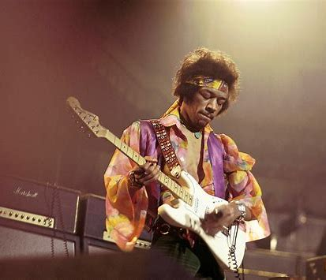
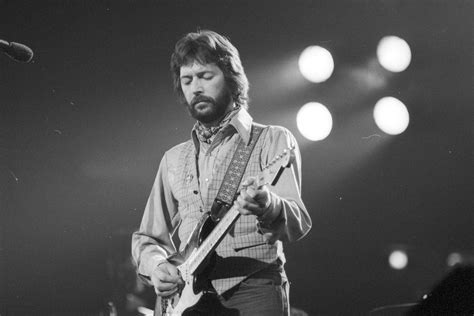
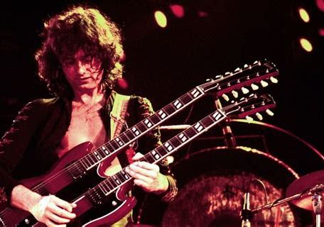
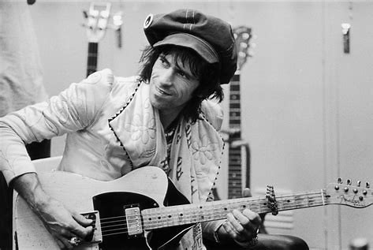
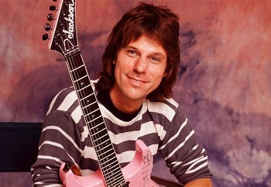

様々な種類やブランドがあるギターですが、ここでは有名なギタリストを紹介します。
有名なギタリスト
ジミ・ヘンドリックス
エレキギターの概念を変え、「神」と称されたギタリスト。活動期間は約４年間という短いキャリアにも関わらず、すべてのロックギタリストは彼の影響下にあると言っても過言ではない。
エリック・クラプトン
ギタリストだけでなく、ボーカル、作曲者としても活躍しているアーティスト。ロックミュージックにされがちであるが、本人的には常にブルースを奏で続けた。
ジミー・ペイジ
上述した二人と共に三大ギタリストと称され、世界で最も成功したロックバンドの一つ、レッド・ツェッペリンのギタリスト兼リーダーである。現代のメタルギターの祖と呼ばれる。
キース・リチャーズ
ビートルズ並び称されるローリングストーンズのリード・ギタリスト。打ち込みなどの現代的な音に背を向け、「生身の人間によるグルーヴ」にこだわる姿勢を見せる。
ジェフ・ベック
常に新しいサウンドを追求する姿勢が評価されている個性的なギタリストで、「ロックギタリストには2種類しかいない、ジェフ・ベックとジェフ・ベック以外だ。」という言葉が有名である。